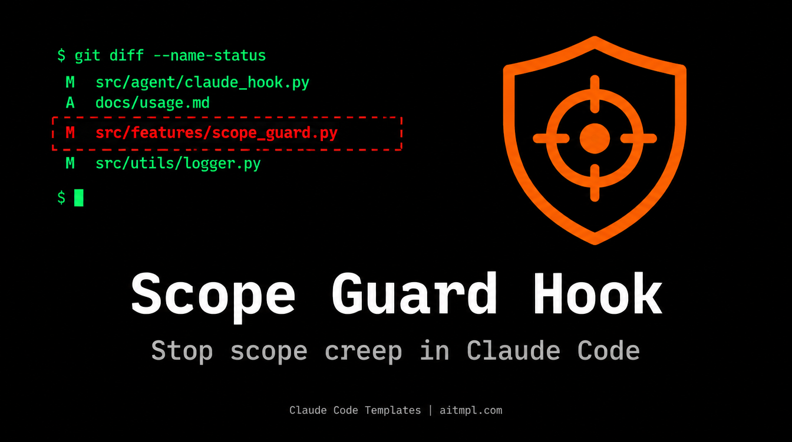

Installation
Install the Scope Guard Hook using the Claude Code Templates CLI:
npx claude-code-templates@latest --hook quality-gates/scope-guardThis copies scope-guard.sh to .claude/hooks/ and registers a Stop hook in your .claude/settings.json.
The Problem: Scope Creep by Agent
You hand Claude a spec that says "modify src/orders/handler.py and add src/orders/validator.py". Twenty minutes later the diff touches nine files, including a "helpful" refactor of your auth module. Nothing is broken, but your review just got much harder.
Scope Guard compares what changed in git against what the spec declared, and tells Claude when they don't match.
How It Works
- Fires on Stop. Every time Claude finishes a response, the hook runs.
- Collects modified files from
git diff --name-only(unstaged) andgit diff --cached --name-only(staged). - Finds the active spec: the most recently modified
*.spec.mdtouched within the last 60 minutes. - Parses the declared files from the section headed "Files to Create", "Files to Modify" (or "Ficheros").
- Reports out-of-scope files on stderr. It is a warning only; the hook always exits 0.
If there are no modified files, no recent spec, or no declared-files section, the hook silently does nothing.
The Hook Configuration
{
"hooks": {
"Stop": [
{
"matcher": "",
"hooks": [
{
"type": "command",
"command": "bash \"$CLAUDE_PROJECT_DIR\"/.claude/hooks/scope-guard.sh"
}
]
}
]
}
}What Gets Ignored Automatically
| Category | Patterns |
|---|---|
| Tests | *.test.*, *_test.*, test_*, tests/, __tests__/ |
| Docs and config | *.md, *.json, *.yml, *.yaml, *.lock |
| Infrastructure | Dockerfile, docker-compose*, .gitignore, *.csproj, *.sln |
Step-by-Step Workflow
1. Write a spec with a declared-files section:
# Add order validation (orders.spec.md)
## Files to Create/Modify
- src/orders/handler.py
- src/orders/validator.py
## Acceptance Criteria
- Reject orders with negative quantities2. Ask Claude to implement it:
Implement orders.spec.md3. Read the warning. If Claude also edited src/auth/session.py, you'll see this when it finishes:
SCOPE GUARD: Files modified OUTSIDE the scope of active spec (orders.spec.md):
- src/auth/session.py
Review if these changes are intentional or if the agent expanded the scope.4. Decide. Either revert the stray change (git checkout src/auth/session.py), or add the file to the spec if the change was genuinely needed.
exit 0 to exit 2 in the script so Claude is forced to address the out-of-scope files.
Limitations
- It only sees files tracked by git; brand-new untracked files won't appear until staged.
- The "active spec" is the newest
*.spec.mdfrom the last hour, so keep one spec active at a time. - Path matching is by exact path or path suffix, so declare full relative paths.
Conclusion
Scope Guard is a small, non-intrusive quality gate that keeps agent-written diffs matching the plan you approved. Install it once and every spec gets a free scope check.
Created by Daniel Ávila